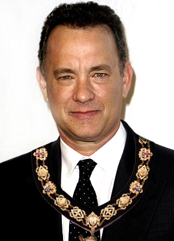

About Trippeldam
Trippeldam is a nice and joyful city to walk, stay or to shop some time. It has got the atmosphere of an old-fashioned village but also the modern influences of the contemporary time.
We have a lot of shops and you can also dine in the many restaurants we have. Even for the children there are a lot of fun things to do such as, a playground, swimming pool and a craft center where they can make their own candles, bracelets and many more things.
While the wives are shopping and the kids are playing, the fathers can relax in one of our pubs, got to the Mediamarkt for the newest technology or pay a visit to our own soccer team, FC Trippeldam.
Next to the soccer fields we have a big sports complex where you can fitness, box and much more. Trippeldam also has got a big forest where you, for example, can walk and take pictures.
Around the holidays we have a lot of activities and events you can visit. Like with Christmas we have got an ice rink and a giant Christmas tree.
We also have a nice mayor named Mr. Pols. Mayor Pols is already 15 years mayor of Trippeldam and so far there are no complaints about him.
He listens careful to the people and tries to take their opinions with him in the decisions that are taken. He is also always present with important events.